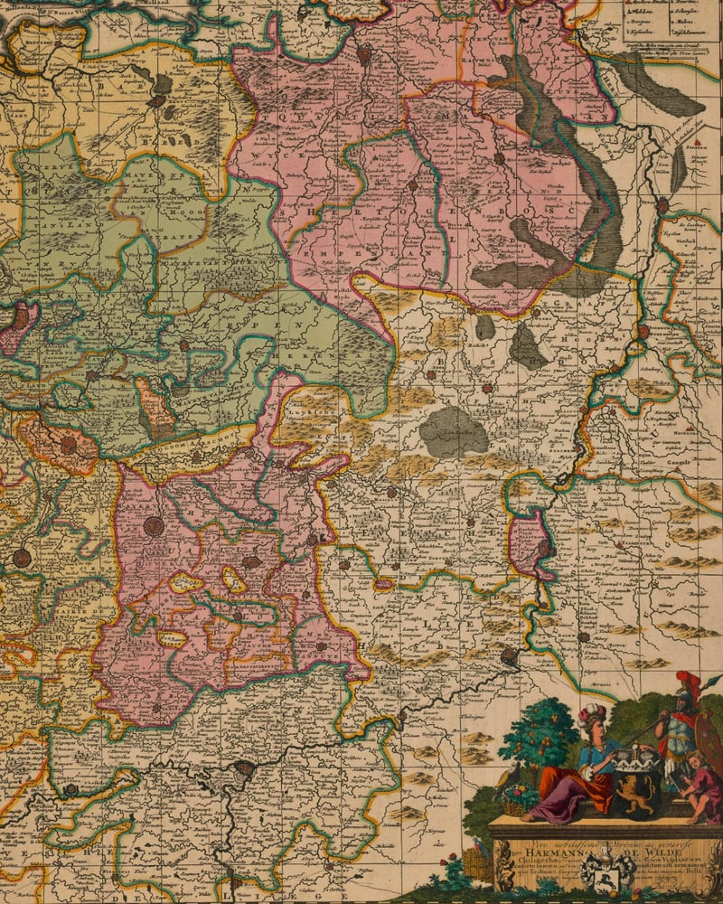
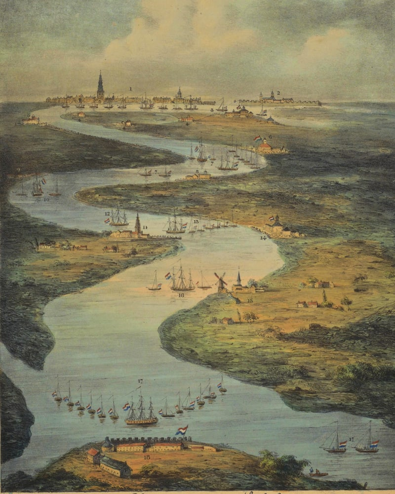
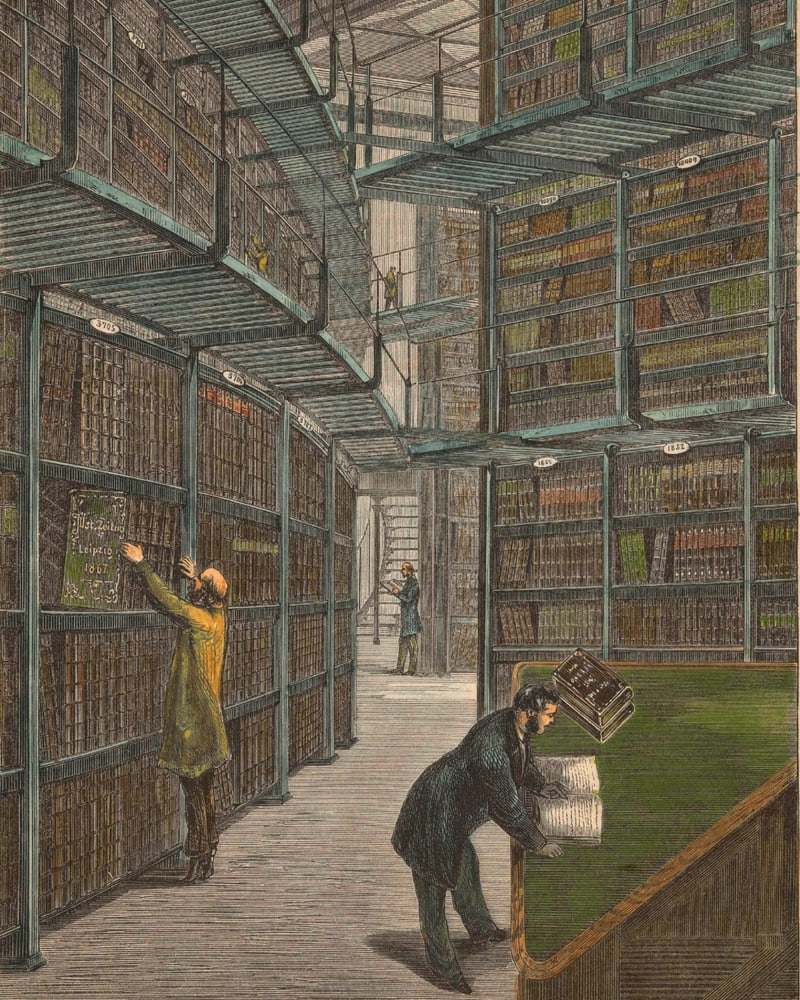

Understand the risk profile behind your business
SUPPLIER PROGRAMME · APPLICATIONS OPEN
We help Indian manufacturers pursue working-capital finance. The first 15 selected receive hands-on support at no charge.
Check if Kanan can help
Great companies
borrow from the future.
Let's secure your orders.
DronaAOS turns fragmented evidence into governed decision context.
01
Products, suppliers, materials, locations, rules and events are connected in context.
02
External risk is traced to the deeper-tier supplier, the order and its possible fulfilment effect.
03
Authorised evidence is mapped to the institution's own requirements, with sources, permissions and uncertainty preserved.

An early-stage system for automating evidence work across Kanan's products, currently in research and development.

Kanan's evidence-connection engine for manufacturers, suppliers, and financiers — currently rolling out through direct partnerships.

A live intelligence tool tracking AI policy and regulatory developments across India.
Kanan Execution Roadmap
Kanan began in research and development, building a source-linked model connecting products, suppliers, materials, locations, rules, evidence and external events. A source-linked model connecting the actors, evidence, rules and events of global trade.
Kanan is forming focused partnerships with manufacturers and financial institutions, bringing deeper supplier evidence and external risk into defined decision workflows. Focused partnerships bring deeper supplier evidence and external risk into real decision workflows. Discuss a partnership
Our first deployment will focus on precision-engineering supply chains connecting India, the United States and the European Union. Beginning with precision-engineering supply chains connecting India, the United States and the European Union.
Give financial institutions a clearer view of the supplier, the order and the external risks that may affect fulfilment. A clearer view of the supplier, the order and the external risks affecting fulfilment.
Through the Supplier Programme, Kanan is supporting a limited group of precision manufacturers seeking working-capital finance.
Applications open
Check whether Kanan can help prepare your working-capital case.